«В фотографии нет теней, которые
не могли бы быть освещены».
— Беренис Эббот
Свет позволяет фотографу передавать форму,
объём и настроение, а цвет помогает
создавать выразительные художественные образы.
Исследуй свет и цвет
Часть первая
Свет
Освещение определяет, как зритель воспринимает
объекты, пространство и атмосферу фотографии.
01
Естественное и искусственное освещение
В фотографии выделяют два основных типа
освещения: естественное и искусственное.
Естественный свет создаётся природными
источниками, прежде всего солнцем.
Его особенности зависят от времени суток,
погоды и окружающей среды.
Например, в пасмурный день облака
рассеивают солнечные лучи, делая
освещение мягким и равномерным.
Искусственный свет создаётся с помощью
ламп, вспышек, светодиодных панелей
и других осветительных приборов.
Его главное преимущество — возможность
контролировать направление, яркость
и иногда цвет освещения.
Оба типа света могут использоваться как
отдельно, так и вместе, позволяя фотографу
создавать различные визуальные эффекты.
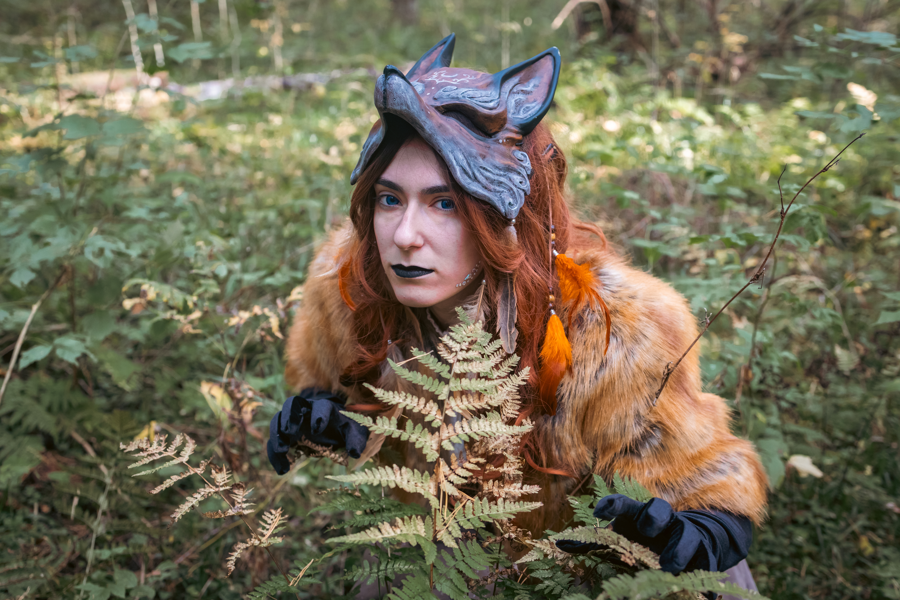
Естественный светСолнце, небо и отражённое освещение
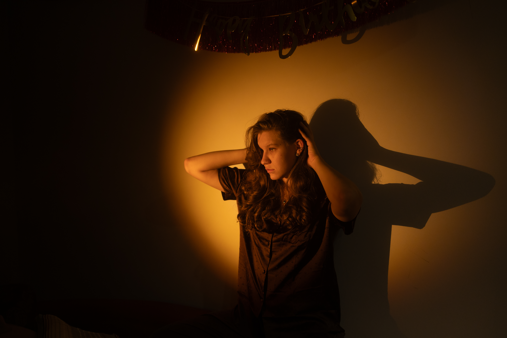
Искусственный светЛампы, вспышки и светодиодные панели
02
Мягкий и жёсткий свет
По характеру освещения свет принято
разделять на мягкий и жёсткий.
Мягкий свет создаёт плавные переходы между
освещёнными и затенёнными участками.
Тени получаются размытыми, а контраст —
относительно невысоким.
Такой свет часто используют в портретной,
предметной и художественной фотографии.
Мягкое освещение можно получить в пасмурную
погоду, возле большого окна или при
использовании специальных рассеивателей.
Жёсткий свет образует чёткие, выразительные
тени и сильные перепады яркости.
Он помогает подчеркнуть геометрию,
фактуру и форму объектов.
Примером жёсткого освещения может служить
прямой солнечный свет в ясный полдень.
Несмотря на сложность работы с ним,
такой свет позволяет создавать необычные
контрастные и драматичные фотографии.
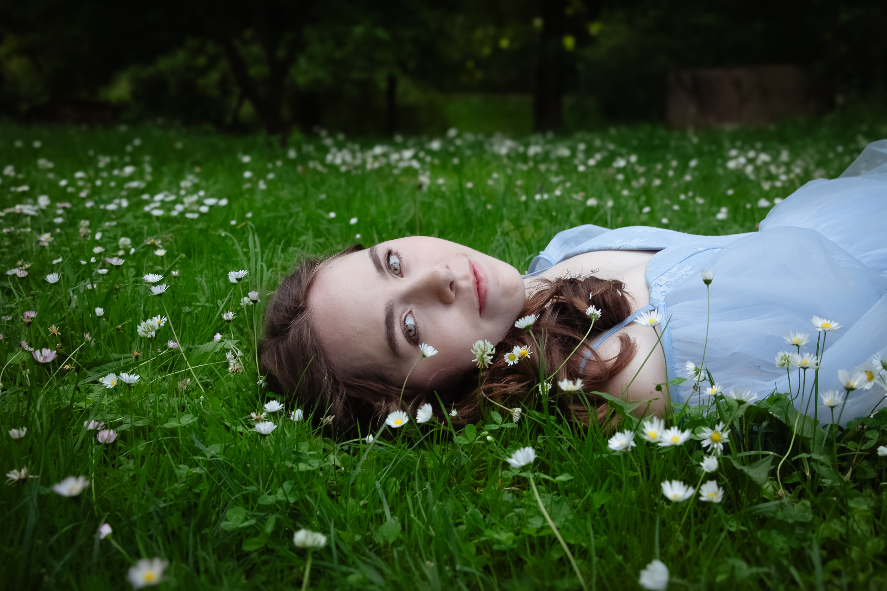
Мягкий светПлавные переходы и мягкие тени
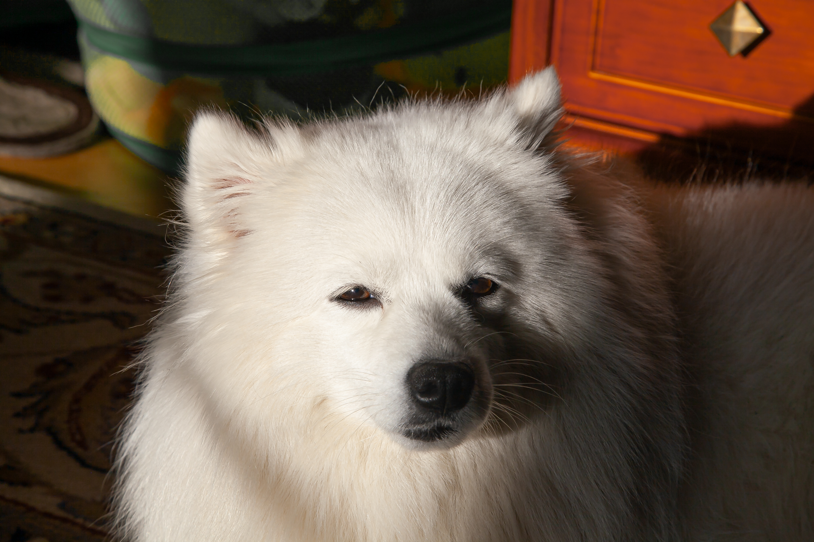
Жёсткий светРезкие границы теней и контраст
03
Направление света
Направление света значительно влияет
на восприятие формы и объёма объектов.
В зависимости от расположения источника
освещения выделяют несколько основных вариантов.
01
Фронтальный
Свет направлен на объект со стороны
камеры. Он равномерно освещает
поверхность, уменьшает заметность
теней и делает изображение
менее объёмным.
02
Боковой
Свет падает на объект сбоку.
Он подчёркивает рельеф,
текстуры и объём, создавая
выразительные переходы между
светлыми и тёмными участками.
03
Контровой
Свет находится позади объекта
и направлен в сторону камеры.
Он позволяет создавать силуэты,
светящиеся контуры волос и фигуры,
а также атмосферные кадры.
04
Верхний
Свет располагается над объектом.
Он может создавать глубокие тени
под глазами, носом и подбородком,
а также подчёркивать форму предметов.
05
Нижний
Свет направлен снизу вверх.
Он встречается реже и часто
используется для создания необычного,
загадочного или тревожного настроения.
Выбор направления света зависит от того,
какие особенности объекта фотограф
хочет подчеркнуть.
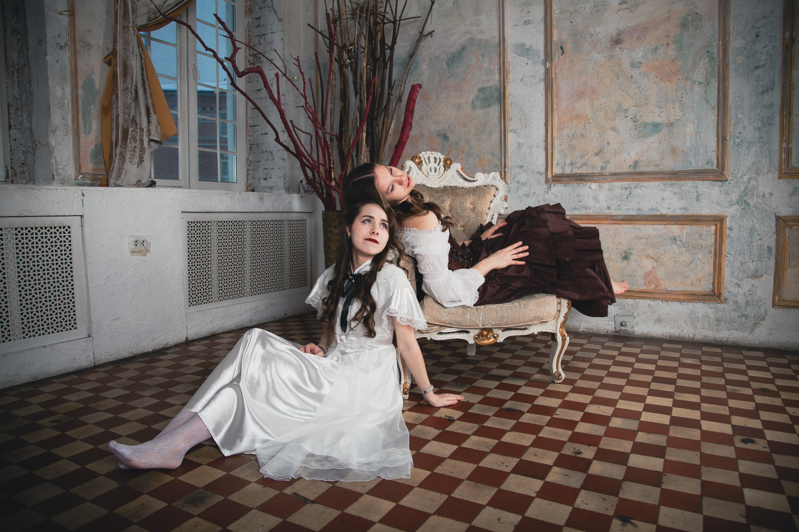
Фронтальный свет
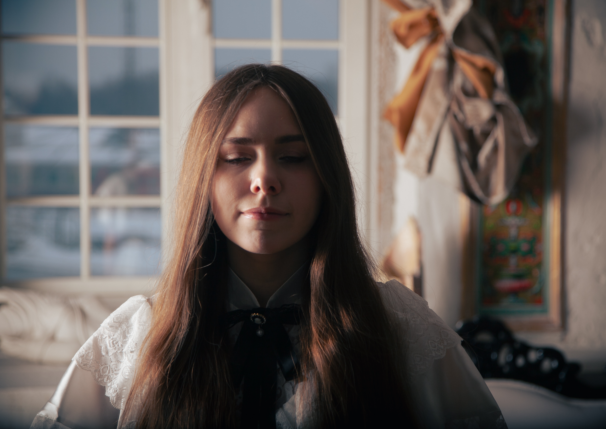
Боковой свет
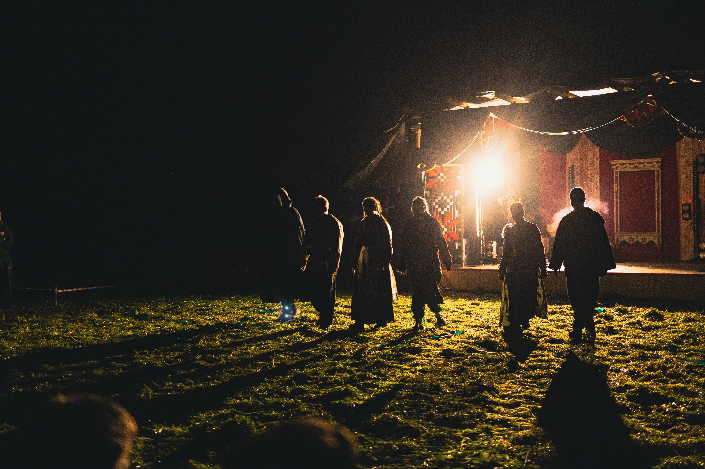
Контровой свет
04
Золотой и синий час
В течение дня характер естественного
освещения постоянно меняется.
Особенно интересными для фотографов
считаются два коротких периода —
золотой и синий час.
Золотой час наступает вскоре после
восхода солнца и незадолго до заката.
В это время солнечные лучи проходят
через более толстый слой атмосферы,
благодаря чему свет приобретает
тёплый золотистый оттенок.
Низкое положение солнца создаёт
длинные тени и красиво подчёркивает
объём объектов.
Золотой час особенно популярен
в портретной, пейзажной
и художественной фотографии.
Синий час — период сумерек незадолго
до восхода или после заката, когда
солнце находится ниже горизонта,
а небо приобретает насыщенные
холодные оттенки.
Такое освещение создаёт спокойную,
загадочную атмосферу и часто используется
для съёмки городов, архитектуры
и ночных пейзажей.
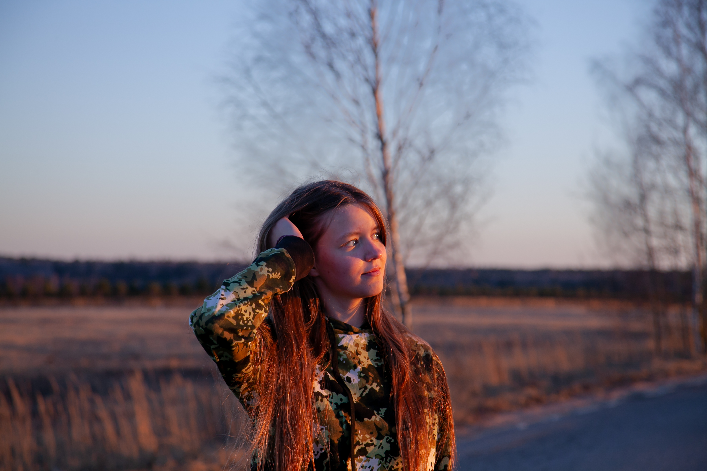
Золотой часТёплые оттенки и длинные тени
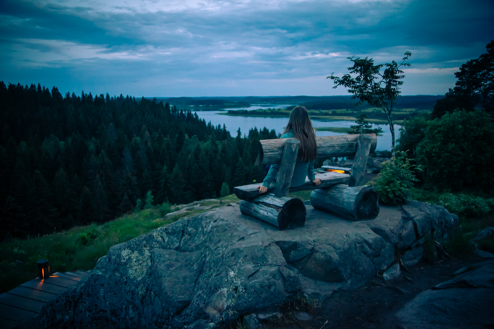
Синий часХолодные сумеречные оттенки
Часть вторая
Цвет
Цвет влияет на настроение кадра,
визуальную гармонию и восприятие изображения.
05
Роль цвета в фотографии
Цвет — один из главных способов
передачи настроения и эмоций в фотографии.
Он помогает выделить важные детали,
создать визуальную гармонию
и направить внимание зрителя.
Разные цвета могут вызывать различные
ассоциации. Тёплые оттенки часто
воспринимаются как уютные и энергичные,
тогда как холодные могут создавать
ощущение спокойствия, свежести
или отстранённости.
Цветовое решение фотографии зависит
от освещения, окружающей обстановки,
настроек камеры и последующей обработки.
Фотограф может стремиться к естественной
передаче цветов или намеренно изменять
их для достижения художественного эффекта.
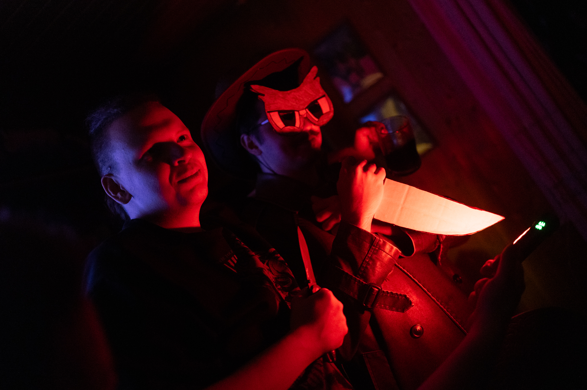
Цвет помогает создавать настроение
и выделять главный объект в кадре
06
Тёплые и холодные цвета
Цвета условно разделяют на тёплые
и холодные в зависимости
от их визуального восприятия.
Тёплые цвета — красный, оранжевый,
жёлтый и близкие к ним оттенки.
Они часто ассоциируются с солнечным
светом, теплом, энергией и уютом.
Тёплая цветовая гамма хорошо подходит
для осенних пейзажей, портретов на закате
и фотографий с атмосферой домашнего уюта.
Холодные цвета — синий, голубой,
сине-зелёный и близкие оттенки.
Они могут передавать спокойствие,
прохладу, загадочность
или ощущение пространства.
Холодная гамма нередко используется
в зимних пейзажах, ночной фотографии
и снимках с более сдержанным настроением.
При этом эмоциональное восприятие цветов
зависит от их сочетаний, яркости
и содержания фотографии.
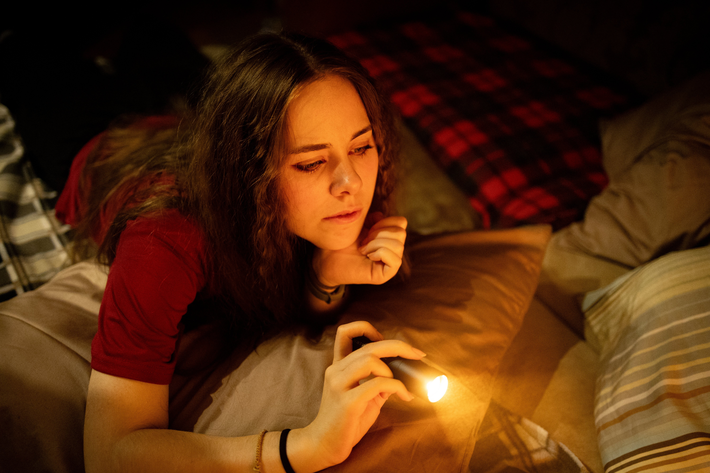
Тёплая гаммаКрасные, оранжевые и жёлтые оттенки
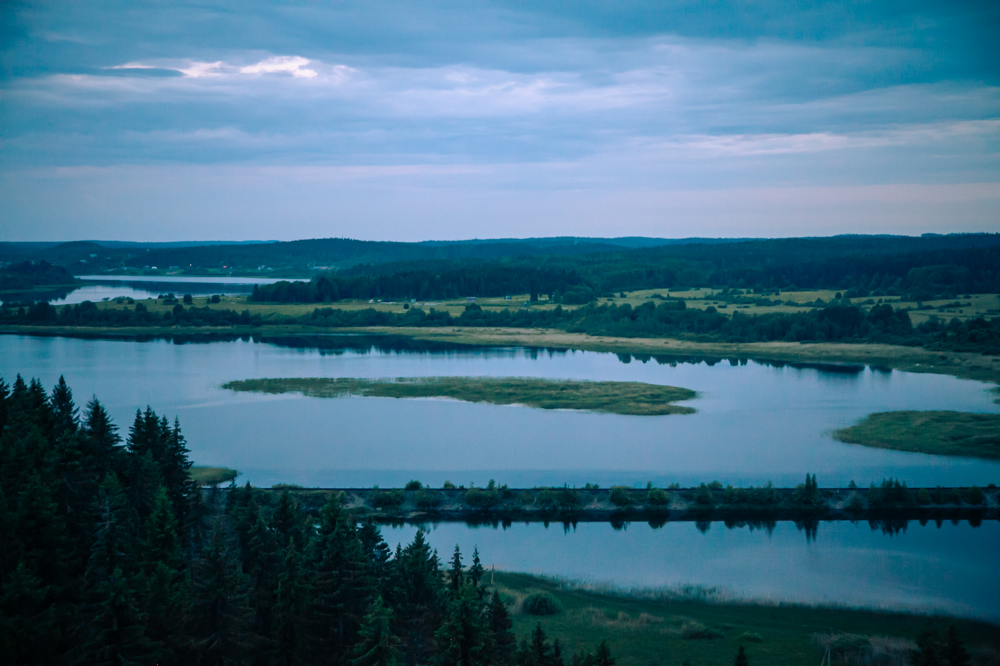
Холодная гаммаСиние, голубые и сине-зелёные оттенки
07
Цветовой круг и гармония цветов
Для создания гармоничных сочетаний
фотографы и художники используют
цветовой круг — схему, показывающую
взаимное расположение различных цветов.
Он помогает подбирать оттенки,
которые хорошо сочетаются между собой
или, наоборот, создают выразительный контраст.
Существует несколько основных схем
цветовой гармонии.
Исследуй цветовые сочетания
Выбери тип гармонии и посмотри,
как меняется цветовая палитра.
Комплементарная гармония:
сочетание противоположных цветов,
например синего и оранжевого.
Комплементарная гармония
Основана на сочетании противоположных
цветов цветового круга, например
синего и оранжевого.
Такие сочетания создают сильный
визуальный контраст и помогают
выделить объект на фоне.
Аналоговая гармония
Использует соседние цвета, например
зелёный, жёлто-зелёный и жёлтый.
Подобные сочетания обычно выглядят
спокойными и естественными.
Триадная гармония
Объединяет три цвета, расположенных
на примерно равном расстоянии
друг от друга на цветовом круге.
Она позволяет создавать яркие,
но сбалансированные изображения.
Монохромная гармония
Строится на использовании разных
оттенков, насыщенности и яркости
одного цвета.
Такие фотографии часто выглядят
цельными и атмосферными.
Знание цветовых сочетаний помогает фотографу
осознанно подбирать фон, одежду модели
и окружающие предметы.